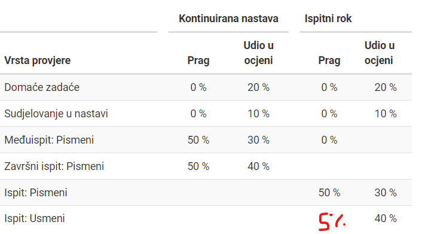

Daho_Cro

nema eseja, domace zadace su neke moodle pitalice, ocjenivanje je kao sto je na stranici samo sto fali 5% praga na roku na usmenom (aka prag je tu jer je obavezan usmeni – nemoguce ga je izbjec ako ides na rok cak i ako imas prolaz s pismenim)
sudjelovanje na nastavi dijeli svaki od predavaca kako on zamisli sabolic recimo ocekuje interakciju? a ne samo da sjedis na predavanju, skrlec i jos jedan mislm da daju bodove za prisutnost(?); generalno ak ti je okej izbugit tih 10 bodova ne moras bit na predavanjima
ove radionice sto su u kalendaru su neobavezne teme ce biti odlucivane on the go sad su samo 3 teme odlucene iako mogu se dobiti bodovi za sudjelovanje ili za prijedlog predavaca za radionicu
ako se dobro sjecam materijali su receni bit stavljeni na moodle
nek me neko ispravi ako sam nesto slucajno krivo rekao